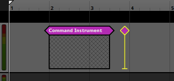
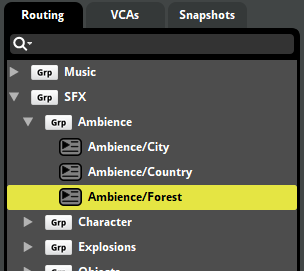

FMOD Studio User Manual 2.02
- Welcome to FMOD Studio
- FMOD Studio Concepts
- Organizing the Project
- Authoring Events
- Working with Instruments
- Managing Assets
- Parameters
- Getting Events into Your Game
- Mixing
- The Sandbox
- Editing During Live Update
- Profiling
- Dialogue and Localization
- Using Source Control
- Supporting Downloadable and User-generated Content
- Advanced Topics
- Quick Start Tutorial
- Event Macros Drawer Reference
- Plug-in Reference
- Modulator Reference
- Parameters Reference
- Scripting
- Scripting API Reference
- Keyboard Shortcut Reference
- Troubleshooting
- Glossary
- 3D Snapshot
- 3D Event
- 3D Preview
- AHDSR Modulator
- Assets Browser
- Assets Tab
- Asynchronous
- Audio Bin Window
- Audio File
- Audio Track
- Audition
- Automation
- Bank
- Banks Browser
- Base Property Value
- Built Banks Output Directory
- Bus
- Bypass
- Channel Format
- Command Instrument
- Compression Format
- Context Menu
- Continuous User Parameter
- Cue
- Cursor
- Cut Behavior
- Deck
- Default
- Destination Marker
- Discrete User Parameter
- Editor
- Effect Bypass
- Effect
- Event
- Event Editor Window
- Event Instance
- Event Property
- Event Reference Instrument
- Events Browser
- File Manager
- Final Property Value
- FMOD Controller Output
- FMOD.io
- Follow Playback Position Mode
- Frame
- Game Parameter
- Group Bus
- Instrument
- Labeled User Parameter
- Listener
- Logic Marker
- Logic Point
- Logic Track
- Loop Playback Mode
- Loop Region
- Magnet Region
- Master Bank
- Master Bus
- Master Track
- Metadata
- Mixer
- Mixer Strip
- Mixer Window
- Mixing Desk
- Modulator
- Multi Instrument
- Object Spatialization
- Panel
- Panner
- Parameter Linking
- Parameter Sheet
- Parameter
- Parameter Condition
- Parameter Cursor
- Parameter Tab
- Persistent
- Platform Exclusion
- Playback Position
- Playlist Selection Mode
- Playlist
- Play State
- Port Bus
- Post-fader
- Pre-fader
- Preset Effect
- Probability Condition
- Programmer Instrument
- Project Mixer
- Quantization
- Return Bus
- Return Track
- Routing
- Routing Browser
- Sandbox Window
- Scatterer Instrument
- Scene
- Scenes Browser
- Searching
- Send
- Sidechain Effect
- Signal Chain
- Single Instrument
- Snapshot Instance
- Snapshot Instrument
- Snapshot
- Spatialization
- Spatializer Effect
- Spatial Randomization
- Sustain Point
- Synchronous
- Tempo Marker
- Timeline
- Track
- Track Head
- Transition Marker
- Transition Region
- Transition Timeline
- Transport Controls
- Trigger
- Trigger Region
- Untrigger
- User Property
- Version
- Appendix: Celeste Getting Started Guide
- Appendix: Reaper Integration
26. Glossary
This page includes definitions for various common FMOD Studio terms, along with references to related terms and documentation.
26.1 3D Snapshot
a 3D snapshot is a snapshot whose position in three-dimensional space affects its behavior. To be 3D, a snapshot must feature at least one built-in parameter or effect with spatial behavior.
26.2 3D Event
A 3D event is an event whose position in three-dimensional space affects its behavior. To be 3D, an event must feature at least one built-in parameter or effect with spatial behavior.
The most common way of making an event 3D is to add an FMOD spatializer effect to one of its tracks. This effect pans and attenuates the signal as if it came from a particular direction and distance relative to the listener. Other effects with spatial behavior, such as the FMOD object spatializer and the Resonance Audio source, also make an event 3D.
Built-in parameters only audibly alter an event's behavior if they are used to trigger instruments in that event, to automate properties of that event, or to automate the properties of that event's instruments.
When viewing a 3D event in the event editor window, the 3D preview appears in the overview pane.
26.3 3D Preview
The 3D Preview is a tool for auditioning any behavior of an event that depends on the event's position relative to the listener in three-dimensional space. The 3D Preview appears in the overview pane when a 3D event is displayed in the editor.
The 3D preview represents a top-down view of a spherical area surrounding the listener. The radius of this circle is equal to the event's max distance, as defined by either the max distance property of the event's spatializer effect, or by the maximum value of its distance parameter. The listener is always located at the exact center of the circle, facing forward ('up' on the 3D preview).
The arrow-shaped icon represents the event emitter, and the direction that the arrow points represents the direction the emitter is facing. By default, the emitter is positioned in the same location as the listener and facing the same direction. You can change the position of the emitter by clicking and dragging it to any new location in the circle, and you can rotate the emitter by hovering the mouse cursor over the 3D preview and spinning the mouse wheel. Holding down the Ctrl key while dragging the listener changes the emitter's elevation. (If the current elevation of the emitter is above or below that of the listener, the difference in elevation is indicated by a dashed line.) Double-clicking on the 3D Preview returns the emitter to its default position and facing.
The light-gray circle surrounding the arrow represents the event's envelopment, as defined by the sound size property of the event's spatializer effect. The light gray arc or circle that appears around the edge of the 3D preview represents the current extent of the event. If a spatializer's minimum extent has been set to a value greater than 0 degrees, the minimum extent is shown as a white arc overlapping the light gray arc that represents current extent.
26.4 AHDSR Modulator
An AHDSR modulator can be applied to the properties of any project element that can be started and stopped, including instruments, events, and snapshots. AHDSR modulators respond to the starting of their associated project elements by ramping their modulated properties up from neutral values to specified values, and to the stopping of their associated project elements by ramping their modulated properties down from those specified values to neutral values.
AHDSR modulators are most commonly used to add fade-ins and fade-outs to instruments without those fades being dependent on the position of the playback position. This is especially useful for instruments on parameter sheets other than that of the timeline.
26.5 Assets Browser
The assets browser is a tool for managing, organizing, and auditioning your project's imported audio files. It can be found in the assets tab of the event editor window, as well as in the audio bin window
26.6 Assets Tab
The assets tab appears in the event editor window and the audio bin window. Clicking on it allows you to access the assets browser.
26.7 Asynchronous
In asynchronous instruments, the precise position of the playback position within the instrument's trigger region has no bearing on which part of each audio file plays. This allows you to treat instruments as switches that can be turned on and off, adding sounds to the event on demand.
The synchronous or asynchronous behavior of an instrument can be identified by the appearance of the waveform graphics drawn on its trigger region: If the waveforms stretch all the way to the edge of the trigger region, the instrument is synchronous; And if the waveforms are contained within borders, the instrument is asynchronous.
26.8 Audio Bin Window
The audio bin window contains tools for importing, managing, organizing, and auditioning audio files in your project, as well as to specify loading behavior and platform encoding settings. It also allows you to access FMOD.io.
The two main tabs of the audio bin window are the assets tab and the FMOD.io tab.
26.9 Audio File
An audio file is a file formatted such that its content can be played audibly using a media player application.
Audio files are the raw building blocks used to construct instruments and events in FMOD Studio.
26.10 Audio Track
An audio track is a kind of event track that functions as a group bus within an event, allowing each event instance to function as a small mixer. Audio tracks can hold and receive input from instruments of all kinds. Audio tracks can be routed into other audio tracks, or into the event's master track.
An event's tracks can be viewed in the event editor window by selecting the event in the events browser.
The signal chain of an audio track can be seen by clicking on the audio track's head in the editor.
The content on a track can not vary between instances of an event.
The output of a track can vary between instances of an event.
26.11 Audition
For the purposes of this manual, auditioning is playing the content of an FMOD Studio project through FMOD Studio. Auditioning allows you to preview and tweak your project's events, assets, and mix prior to their being implemented into your game.
Events can be auditioned in the editor by using the transport controls. They can also be auditioned in the sandbox window by clicking and dragging events from the events browser into the sandbox.
Assets can be auditioned in the assets browser by selecting the asset to be auditioned, then clicking on the play button or waveform graphic at the bottom of the browser. They can also be auditioned in the deck if they're part of the selected single, multi, or scatterer instrument.
Programmer instruments cannot be auditioned, as they depend on your game's code to select an asset to play, but each programmer instrument can be assigned a placeholder asset for the purposes of auditioning the event. These placeholder assets can be auditioned in the deck.
Your project's mix is automatically applied to all events auditioned through FMOD Studio. You can audition a snapshot in the mixer window by selecting it in the snapshots browser and using the transport controls that appear in the mixing desk.
Auditioning should not be confused with playing the content of an FMOD Studio project in your game.
26.12 Automation
Automation is a means to map the possible values of a parameter to specific values of properties, such that setting the automating parameter to a particular value sets the automated property to the corresponding value specified by its automation. Automation can be added to most track properties, event and snapshot macros, parameter properties (including parameter value), and effect properties.
Automation is displayed in the deck when the instrument, track, or parameter whose property is automated is selected. Automation of an instrument or track's properties may also be displayed in the editor in an automation track.
An automation curve is displayed as a red line. The circular points on the line define the points through which the line passes, while the diamond shape handles allow the line's curve to be adjusted.
A given property may be subject to multiple automation curves, each on a different parameter.
Automation can be added to a property by right-clicking on that property and selecting "Add Automation" from the context menu. This adds an automation widget to the deck. Once an automation widget is present, click on the "Add Curve" button to begin creating automation.
26.13 Bank
A bank is a collection of events from your FMOD Studio project, formatted and compressed for use with the version of the FMOD Engine integrated into in your game. Banks allow you to choose which content is loaded into memory at any given time.
The "Built bank file separation" setting in the build tab of the preferences dialog determines how your project's sample data and metadata are built into banks.
If the "Build metadata and assets to a single bank" option is selected, building your project creates a .bank file in your project's built banks output directory for each bank built.
If the "Build metadata and assets to separate banks" option is selected, building your project creates a .bank file and an .assets.bank file in your project's built banks output directory for each bank built.
If the "Build metadata, non-streaming assets, and streaming assets to separate banks" option is selected, building your project creates a .bank file, a .streams.bank file, and an .assets.bank file in your project's built banks output directory for each bank built.
These built bank files are all your game code needs to make use of the events they contain. Built bank files are compatible with any version of the FMOD Engine with the same major and product version numbers as the version of FMOD Studio used to create them. For example, a bank built in FMOD Studio version 2.00.03 is compatible with FMOD Engine versions 2.00.03, 2.00.00, and 2.00.10, but not with versions 1.10.14, 1.00.03, and 2.01.03.
At least one bank in your FMOD Studio project must be a master bank. A master bank contains data relevant to your entire FMOD Studio project, and so at least one master bank must be loaded into memory before any event in any bank may be used by your game. In most games, the master bank is kept loaded into memory at all times.
26.14 Banks Browser
The banks browser is a tool for creating and naming banks, and for assigning events to and from those banks. It can be found under the banks tab of the event editor window.
26.15 Base Property Value
A property's base value is the value of that property before it is modified by modulators, automation, and snapshots. If all automation and modulation is removed from a property and it is not scoped into any active snapshots, the property returns to its base value.
26.16 Built Banks Output Directory
The built banks output directory is the folder on your hard drive that FMOD Studio outputs built bank files into when you build your project. By default, this is a folder named Build found inside your FMOD Studio project folder once you have built the project.
You can change the built banks output directory in the build tab of the preferences dialog.
26.17 Bus
In FMOD Studio, a bus is a modular component of the mixer that produces a submix from the signals routed into it and has its own signal chain. All buses, other than port buses and the master bus, can be routed into group buses, into port buses, or into the master bus.
26.18 Bypass
Any effect in a signal chain may be bypassed.
Bypassed effects continue to upmix or downmix the channel format as usual, but do not otherwise process the signal.
Effects that are bypassed when you build your project will be bypassed in your project's banks, and therefore won't process the signal in your game.
To bypass an effect or make an effect no longer bypassed, right-click on the effect in the deck and select "Bypass" from the context menu.
26.19 Channel Format
A channel format is the number and configuration of audio channels used at a point in a signal chain. Commonly-used channel formats include mono, stereo, surround 5.1, surround 7.1, and surround 7.1.4, though there are many others.
The channel format of a signal chain can be changed at the input and output of any bus or track. It can also be changed by certain effects.
By default, the input and output formats of tracks and buses are set to "automatic."
26.20 Command Instrument
Command instruments are a type of instrument that can issue a specific command to your game's FMOD Studio system. This command is treated just as if it was issued through the FMOD API.

For more information about command instruments, see the instrument types section of the working with instruments chapter.
26.21 Compression Format
Compression format is a property of audio files, being the encoding format used by those files. Note that an audio file's compression format has no effect on the size or performance of your game, as FMOD Studio's build process recompresses all audio files according to their platform encoding settings, effectively replacing any existing compression.
26.22 Context Menu
The context menu is a menu of commands that appears when you right-click on something in FMOD Studio. The commands in a context menu always apply to the specific thing you clicked on when selected.

26.23 Continuous User Parameter
Continuous user parameters are a kind of parameter that use floating point (decimal) numbers.
Each continuous parameter has a minimum and maximum value, and can be set to any floating point value within that range.
Like all user parameters, continuous user parameters can be customized to represent any variable in your game project. The values of user parameters may be updated from your game's code by using the FMOD Studio API, and can also be set by automation and adjusted by modulators. Continuous parameters are most commonly used for variables that can change in very fine or arbitrary gradations.
26.24 Cue
A cue is a command given to an event instance that tells the timeline playback position to continue past the next sustain point it encounters. Cues serve no purpose in events without sustain points.
You can audition cues in the event editor window by clicking on the "A" button in the event editor window's editor's transport bar. This button only appears if the event displayed in the event editor window's editor contains at least one sustain point.
Note that there is no way to send a cue to an event instance created by an event reference instrument. If you want to mimic the effect of a cue in a way that works in referenced events, it is best to use a loop region with a parameter condition instead of a sustain point, and change the parameter's value instead of using a cue.
26.25 Cursor
The cursor is a vertical gray line that appears on each parameter sheet in your project. It represents the value to which the displayed parameter was last set. Note that the actual current value of the parameter may be different from the cursor value, and is indicated by the playback position.
You can reposition the cursor by clicking on any part of the parameter sheet's ruler. Note that repositioning the cursor also changes the playback position in most cases.
In versions of FMOD Studio prior to 1.10.00, the playback position was called the 'cursor,' and the cursor was called the 'ghosted cursor.'
26.26 Cut Behavior
The cut behavior of an instrument is how it acts when untriggered. The most common cut behaviors are "cut immediately" and "play to end."
"Cut immediately" cut behavior causes the instrument to immediately stop producing output when untriggered. All synchronous instruments use this cut behavior.
"Play to end" causes the instrument to continue playing any existing output to completion when untriggered.
For more information about cut behavior, see the instrument reference chapter.
26.27 Deck
The deck is found below the birdseye view in the event editor window and the mixer window, and allows you to view and edit the properties or signal chain of the currently-selected item in the editor or mixing desk.
26.28 Default
A default is an event on which new events may be based. You can use a default to quickly create copies of an existing event. These copies may subsequently be customized freely.
The "#default" tag appears next to defaults when they are displayed in the events browser. Defaults do not display the "#unassigned" tag when not assigned to a bank.
You can designate an event as a default by right-clicking on the event in the events browser, then selecting "Add to Defaults" from the context menu. Nested events may not be designated as defaults.
An event created based on a default is initially identical to the default, but has no special connection to the default thereafter. Editing an event based on a default does not change the default, and editing a default does not change events that were based on that default. You can create an event based on a default by right-clicking on the events browser, then selecting "New Event > Defaults" from the context menu and selecting the desired default event.
Defaults are otherwise identical to other events.
26.29 Destination Marker
A destination marker is a kind of logic marker that defines a possible destination for a transition marker or transition region.
To add a destination marker to the event displayed in the editor, right-click on the logic tracks, then select "Add Destination Marker" from the context menu. Like other logic markers, destination regions can only be added to the timeline of an event and not to its other parameters.
To rename a destination marker, double-click on it, then enter a new name. Renaming a destination marker automatically updates all transition markers or regions linked to that marker to the new name.
You can move a destination marker to a new logic track or location on the timeline by clicking and dragging it to the new location.
26.30 Discrete User Parameter
Discrete user parameters are a kind of parameter that use integer (whole) numbers.
Each discrete parameter has a minimum and maximum value, and can be set to any integer value within that range.
Like all user parameters, discrete user parameters can be customized to represent any variable in your game project. The values of user parameters may be updated from your game's code by using the FMOD Studio API, and can also be set by automation and adjusted by modulators. Discrete parameters are most commonly used to represent variables in your game that increase and decrease in increments of fixed size.
26.31 Editor
The editor is the main or central pane of several different windows in FMOD Studio.
An editor is found in the center of the event editor window, and allows you to view, edit, and audition events. To view an event in the event editor window's editor, click on it in the Events browser.
An editor is found in the center of the sandbox window, and allows you to view, edit, and audition event and snapshot instances in scenes. To view a scene in the sandbox window's editor, click on it in the scenes browser.
An editor is found in the center of the profiler window, and allows you to view, record, and audition profiler sessions. To view a profiler session in the profiler window's editor, click on it in the sessions browser.
26.32 Effect Bypass
Individual effects can be bypassed to prevent them from affecting your project without completely removing those effects. This is useful when rapidly iterating on content, when trying to isolate the behavior of specific effects, and when comparing different effects within the same event.
An excluded effect does affect the channel format of the signal at its position in the signal chain, but does not otherwise process the signal.
To toggle whether an effect is bypassed, right-click on the effect and select "Bypass" from the context menu.
26.33 Effect
An effect is a modular unit that can be inserted into the signal chain of a track or bus to perform real-time signal processing. There are many different effects, and different effects process the signal in different ways.
The effects in an event are the same in all instances of that event, but the property values of those effects can vary between event instances if they are affected by automation or modulation.
Some effects are instances of preset effects and can be present in multiple different events in the project. All instances of a single preset effect feature the same basic property values, automation, and modulation.
See the Effects Reference chapter for information about specific effects.
26.34 Event
An event is an instanceable unit of sound content that can be triggered, controlled and stopped from game code. Everything that produces a sound in a game should have a corresponding event.
An event contains and is composed of tracks, instruments, and parameters. The parameters trigger the instruments, which route audio content into the tracks. The tracks route into other tracks, or into the event's master track; The output of the event's master track routes into the project mixer. In addition, the event's parameters can control and manipulate most properties of the event, of the event's instruments and logic markers, and of effect modules on the event's tracks.
26.35 Event Editor Window
The event editor window contains tools for creating, viewing, organizing, editing, and auditioning events. Its major components include the events browser, banks browser, and assets browser, the editor, the overview, the birdseye view, and the deck.
The event editor window can be opened by selecting "Windows > Event Editor" in the menu bar.
26.36 Event Instance
Your game can play multiple instances of each event in your project. It is even possible for multiple instances of the same event to be playing simultaneously.
For example, an event that represents a gunshot might play very frequently in a game. Perhaps guns may be fired simultaneously in two different parts of the same map, or a gun might be fired again before the previous gunshot's tail has ended.
All instances of the same event have the same content. However, each event instance has its own timeline position, position in 3D space, random modulator adjustments, playlist selections, and parameter values. Different instances of the same event can therefore produce very different output, even if they play simultaneously.
For information on creating and playing event instances in your game's code, see the Studio API Guide chapter of the FMOD API User Manual.
26.37 Event Property
An event property is any attribute of an event that can be randomized, or which could be made to vary over time.
The value of an event property can vary between instances of an event.
26.38 Event Reference Instrument
An event reference instrument (or 'event instrument') is a kind of instrument that plays an instance of a specified event elsewhere in the project when triggered. The resultant instance's output is routed into the track that holds the event reference instrument.
26.39 Events Browser
The events browser is a tool for creating, naming, and organizing events. It can be found in the event browser window, as well as under the events tab of the event editor window.

26.40 File Manager
A file manager is an application that allows you to view and manage files and folders. Most operating systems include a file manager.
The file manager included in Windows is Explorer. The file manager included in macOS is Finder.
26.41 Final Property Value
The final value of a property includes adjustments applied by automation, modulation, and snapshots.
By comparison, the base value of a property does not include adjustments applied by automation, modulators, and snapshots that affect that property, and displayed property value includes adjustments applied by automation but not modulators or snapshots. If a property is not subject to modulation or snapshots, its final value is equal to its displayed value. If a property is subject to neither automation, nor modulation, nor snapshots, its final value is equal to both its base value and its displayed value.
26.42 FMOD Controller Output
FMOD Controller Output is an Output Device available on Windows that supports outputting to a PS5 controller. It supports auditioning a combination of stereo output (for playing via the headphone jack) and a vibration port with stereo output. You can select it in the audio tab of the preferences dialog.
For optimal use, test the controller behavior with official tools on Windows prior to using with FMOD Studio.
26.43 FMOD.io
FMOD.io is an online store that sells a variety of audio files suitable for use as sound effects. It can be found in the audio bin window, or by selecting "Jump to FMOD.io" from the "FMOD.io" menu.
For more information about FMOD.io, go to www.fmod.io.
26.44 Follow Playback Position Mode
Follow playback position mode is a tool for auditioning events repeatedly. Follow playback position can be set by clicking on the follow playback toggle button that appears to the right of the time/beats display.
When follow playback position mode is on, the editor and mixing desk automatically scroll to keep the playback position visible. In addition, any transition timelines that the playback position enters are automatically expanded.
When follow playback position mode is off, the editor and mixer may only be scrolled manually.
Follow playback position mode can also be turned on or off by selecting "View > Follow Playback Position".
26.45 Frame
A frame is the period of time between successive updates of the FMOD Studio system. When in synchronous mode, the FMOD Studio system updates whenever FMOD:Studio::update is called. When in asynchronous mode, it updates when the asynchronous update thread triggers (by default, every 20 ms).
26.46 Game Parameter
Any parameter other than the timeline is a game parameter. Game parameters typically represent the current state of your game.
26.47 Group Bus
A group bus is a kind of bus. Like other kinds of bus, group buses create a submix of all signals routed into them, and have their own signal chains. Any bus or event that is not a port bus, the master bus, or a nested event, can be routed into a group bus.
Group buses can be created, modified and routed in the routing browser.
26.48 Instrument
Instruments are triggerable elements that route audio content into the tracks of an event or trigger behavior through snapshots and commands. Instruments appear in the 'editor' section of the event editor window as colored boxes.
Each instrument is triggered by a particular parameter sheet or action sheet of an event, and is only displayed on that sheet.
The instruments in an event can not vary between instances of that event.
The output of an instrument can vary between instances of an event.
Instruments were called "Sound Modules" in FMOD Studio versions 1.09 and earlier.
For more information about instruments and specific instrument types, see the instrument reference chapter.
26.49 Labeled User Parameter
Labeled user parameters are a kind of parameter that use strings (labels).
Each labeled parameter has a predefined list of labeled values, and can be set to any of those values.
Like all user parameters, labeled user parameters can be customized to represent any variable in your game project. The values of user parameters may be updated from your game's code by using the FMOD Studio API, and can also be set by automation and adjusted by modulators. Labeled parameters are commonly used for variables whose possible values don't have any obvious order or sequence.
26.50 Listener
A listener represents a virtual pair of ears that pick up output from event instances. Event instances with a spatializer effect or built-in parameter can respond to the relative listener location. This can be used to process audio signals in a way that gives the perception of 3D space.
Each listener has a weight that determines how much that listener contributes to the mix. Listener weights are useful for setting up multiple listeners, such as for multiplayer games, or to smoothly transition from one listener to another, such as for moving from camera to camera during an action replay. Listener weights are set via Studio::System::setListenerWeight.
It is possible to have more than one listener active at the same time. These situations are handled as follows:
- Only one instance of each event instance plays for all listeners to hear, rather than one event instance per listener.
- 3D event instances' effective audibility calculation for virtualization is determined by the closest listener to the event instance.
- For a 3D event instance's Doppler effect and distance attenuation, a weighted average of each of the available listeners is used. The weighted average only considers the closest listeners, up to a total weight of 1. If the listener weights for all listeners are set to 1, the listener closest to the emitter is used for distance attenuation.
- Panning is calculated as the weighted average of the panning according to each listener within the event emitter's max distance. This is weighted by how close the listeners are to the emitter and the listeners' listener weight.
26.51 Logic Marker
Logic markers are flags placed along an event's timeline that change how the timeline playback position moves and how instruments in the event react to the passage of time.
The markers of an event appear on an event's logic tracks when the event's timeline is displayed in the editor.
There are several different types of logic marker: Destination markers, destination regions, tempo markers, loop regions, magnet regions, sustain points, transition markers, and transition regions. All of these can be added to an event by right-clicking on the event's logic tracks in the editor and selecting the marker to be added from the context menu.
26.52 Logic Point
A logic point is a collection of transition markers, transition region quantization points, magnet region quantization points, and/or loop region end points in the same event that share the same position on the timeline. In conjunction with probability conditions and parameter conditions, logic points are a way of creating decision trees that determine the behavior of the playback position at that point.
When the playback position encounters multiple transition markers, transition regions, magnet region quantization points or loop region end points at a single timeline position, the highest marker whose probability and parameter conditions are met is the one that determines the behavior of the playback position.
If a destination marker or the beginning of a magnet or destination region shares the same timeline position as a logic point, the playback position, upon transitioning to that timeline position, immediately encounters the logic point.
26.53 Logic Track
The logic tracks are black tracks that appear in the editor, and hold the logic markers of an event.
To add logic markers to the logic track, right-click on a logic track and select the desired marker from the context menu. Logic markers can only be placed on logic tracks while viewing the event's timeline.
You can add more logic tracks to an event by clicking and dragging existing logic markers up and down. The height of a marker on the logic tracks determines which transition marker, transition region quantization point, or loop region end point should take priority when more than one exists at the same timeline position. Higher markers take priority.
You can show or hide the logic tracks by clicking on the logic track disclosure triangle, located to the left of the parameter ruler in the event editor window's editor.
26.54 Loop Playback Mode
When loop playback mode is on, an auditioning event automatically begins auditioning again from the beginning if it automatically stops due to there being no content currently playing and no further content on its timeline.
When loop playback mode is off, an auditioning event that automatically stops does not automatically begin auditioning again.
Loop playback mode can be set by clicking on the loop playback toggle button that appears to the right of the time/beats display.
Loop playback mode can also be set by selecting "View > Loop Playback".
26.55 Loop Region
A loop region is a kind of logic marker that defines two points on the timeline that the playback position is to loop between. Whenever the playback position reaches the end of a loop region, it returns to the beginning of that loop region.
In addition to causing the timeline playback position to loop, a loop region defines a possible destination for a transition marker or transition region.
To add a loop region to the event displayed in the editor, right-click on the logic tracks, then select "Add Loop Region" from the context menu. Like other logic markers, loop regions can only be added to the timeline of an event and not to its other parameters.
You can move a loop region to a new logic track or location on the timeline by clicking and dragging it to the new location.
To resize a loop region, click and drag either of its ends. It is not possible to move the end point of a loop region to the same position as its start point, or vice versa.
To name or rename a loop region, right-click on it, select "Rename" from the context menu, then enter a new name. Renaming a loop region automatically updates all transition markers or regions linked to that marker to the new name.
You can add trigger conditions to a loop region so that it only functions under certain circumstances. To do this, click on the loop region, then change its trigger behavior in the deck. The two kinds of trigger behavior available for transition markers are probability conditions and parameter conditions. The parameter conditions of a loop region are evaluated each time the playback reaches the end of the loop region, and do not affect transition markers and transition regions linked to that loop region.
You can add a transition timeline to a loop region by right-clicking on it and selecting "Add Transition Timeline" from the context menu. The playback position enters the transition timeline of a loop region when it jumps from the end point of that loop region, but not when it jumps from a transition marker or region that targets the loop region.
Loop regions that feature transition timelines are indicated by a hollow circle icon. Double-clicking on a loop region that already features a transition timeline opens that transition timeline, or closes it if it is already open.
26.56 Magnet Region
A magnet region is a kind of logic marker that makes the playback position jump to the start of the region from any part of the timeline outside of the region.
To add a magnet region to the event displayed in the editor, right-click on the logic tracks, then select "Add Magnet Region" from the context menu. Like other logic markers, magnet regions can only be added to the timeline of an event and not to its other parameters.
You can move a magnet region to a new logic track or location on the timeline by clicking and dragging it to the new location.
You can add trigger conditions to a magnet region so that it only functions under certain circumstances. To do this, click on the magnet region, then change its trigger behavior in the deck. The three kinds of trigger behavior available for magnet regions are probability conditions, parameter conditions, and quantization. The parameter conditions of a magnet region are evaluated continuously as long as the playback position remains outside the transition region, but the probability condition of a magnet region is evaluated only when the playback position arrives outside the region (if it is not quantized) or when it encounters one of the region's quantization points (if it is quantized).
You can add a transition timeline to a magnet region by right-clicking on it and selecting "Add Transition Timeline" from the context menu. Magnet regions that already feature transition timelines are indicated by a hollow circle icon.
Double-clicking on a magnet region that already features a transition timeline opens that transition timeline, or closes it if it is already open.
26.57 Master Bank
A master bank is a kind of bank. In addition to the sample data and metadata of the events assigned to it, a master bank contains data related to your project as a whole, including its mixer, buses, routing, and VCAs.
Assigning events to a master bank is not recommended. This is because a master bank must be loaded at all times, meaning that it is not possible to unload the bank in order to conserve memory. However, in small projects where only one bank is needed, assigning events to the master bank may be viable.
By default, a newly created FMOD Studio project contains one master bank.
26.58 Master Bus
Every FMOD Studio project has exactly one master bus. Every signal in your project is eventually routed into the master bus, which creates and outputs the final mix that the player hears when playing your game. The master bus can be seen and edited in the mixer window.
In the routing browser, the buses and events at far left edge of the browser are routed directly into the master bus.
26.59 Master Track
The master track functions as the master bus of an event instance. It produces a submix of the tracks and instruments that route into it.
The content on a track can not vary between instances of an event.
The output of a track can vary between instances of an event.
26.60 Metadata
There are two distinct definitions of metadata in FMOD Studio: Project metadata, and bank metadata.
Project metadata includes events, buses, parameters, instruments, automation, tracks, modulators, instruments, and all the other data that makes up an FMOD Studio project, with the exception of its audio assets and other binary format files. This kind of metadata is stored in xml format in your project folder's Metadata subdirectory.
Bank metadata is project metadata that has been built into banks. This kind of metadata is stored in binary format in your project's built .bank files.
Bank metadata is created based on project metadata as part of building your project's banks.
26.61 Mixer
The mixer is what mixes the outputs of your events into a coherent whole. It functions continuously while your game runs, and can be adjusted and updated in real time by means of snapshots.
The mixer window contains tools and features that allow you to set up routing and mix your project, to apply effects to its signal chains, and to define how those effects and that mix can change in response to game events.
26.62 Mixer Strip
Mixer strips resemble the channel strips found on a hardware mixing desk, and are found in the mixing desk of the mixer window. Each mixer strip is a visual representation of a bus or event in your project's routing browser.
You can use the sliders that appear on mixer strips to tweak your project's levels while auditioning events in the sandbox window, or while using live update to connect to a running copy of your game.
26.63 Mixer Window
The mixer window contains tools for setting up and editing your project's routing, as well as for mixing your project and defining how that mix changes in response to events in your game. Its major components include the routing browser and snapshots browser, the mixing desk, the birdseye view, and the deck.
The mixer window can be opened by selecting "Windows > Mixer" in the menu bar.
26.64 Mixing Desk
The mixing desk is found in the mixer window, and allows you to view and edit your project's mixer. In the mixing desk, buses are represented by mixer strips, and selecting one of these strips causes the signal chain of the associated bus to appear in the deck.
26.65 Modulator
Modulators are devices that modify the value of an event property over time, independent of the event or snapshot's timeline. They appear in the modulation drawer of the modulated property's associated panel, when that panel is displayed in the deck.
There are four kinds of modulator in FMOD Studio: Random modulators, AHDSR modulators, autopitch modulators and sidechain modulators.
To add a modulator to a property, right-click on the property's controller, then select "Add Modulation" from the context menu.
26.66 Multi Instrument
A multi instrument is a kind of instrument with a playlist. When the instrument is triggered, an item from its playlist is selected for play. A multi instrument's playlist can contain single instruments, event instruments, programmer instruments, and other multi instruments.
A playlist that is set to loop plays the number of times specified by the loops counter.
Playlist entries can also be set to loop, but only count as one played item of their parent playlist.
The item selected from a multi instrument's playlist depends on the instrument's playlist selection mode. By default, a multi instrument's playlist selection mode is set to shuffle. To change it, use the playlist selection mode dropdown menu.
Dragging assets onto the trigger region of a multi instrument has different results, depending on which part of the trigger region you drag the assets onto. Dragging assets onto the trigger region's title bar creates a new instrument, just as if you'd dragged them onto an empty section of the track; whereas dragging assets onto the body of the trigger region appends them to the instrument's playlist.
26.67 Object Spatialization
Object spatialization is the blanket term for a variety of specialized spatialization technologies available on some platforms. The specifics of how these technologies work differs from one technology to the next, but they all offer more specialised or higher-quality spatialization than would be possible without those technologies.
For information about using object spatialization in FMOD Studio, see the Spatialization Options and Auditioning Object Spatialization and Height Panning sections of the Advanced Topics chapter.
26.68 Panel
A panel is a gray box that represents a selected project element in the deck when that project element is selected, and holds a number of controls that represent that element's properties.
26.69 Panner
Every audio track, return track and master track features a panner that determines how the output of that track is panned. The form of the panner corresponds to the output format of the track.
26.70 Parameter Linking
FMOD Studio links the values of local parameters of an event and its event instruments. This happens when both the following rules are true:
- The parameters are the same preset parameters (either manually added to both or by the "Exposed recursively via Event instruments" checkbox in the edit parameter dialog box)
- The event instrument's parameter dial is not automated
Linked parameters are instances of the same preset parameter. With any two instances of a preset parameter, if one is subject to automation and modulation, the other is subjected to the same automation or modulation.
Additionally, only base property values, not final property values, are linked. As this can lead to unexpected results, it may be important to link or unlink your parameters using the two linking rules to obtain the desired behavior.
26.71 Parameter Sheet
A parameter sheet is a single page of an event or snapshot that can contain instruments associated with the sheet's parameter in an event, and can display the automation curves associated with that parameter in an event or snapshot. You can view a parameter sheet by clicking the parameter's tab while in the tracks view. The instruments on a parameter sheet are shown on the event tracks into which they are routed.
By default, newly created events contain sheets for their timeline parameters. You can add additional parameter sheets to an event or snapshot by right-clicking on the parameter tab bar and selecting "Add Parameter Sheet" from the context menu. If an event does not have a timeline parameter sheet, you can add one by right-clicking on the parameter tab bar and selecting "Add Timeline Sheet" from the context menu.
Removing a sheet from an event removes all instruments on that sheet from the event, but has no effect on automation. You can remove a parameter sheet from an event by right-clicking on the parameter tab and selecting "Remove Parameter Sheet" or "Remove Timeline Sheet" from the context menu.
26.72 Parameter
A parameter is an event property that can be used to trigger and control an event's instruments, logic markers, and automateable properties, and whose value can be set by game code.
Parameter values can vary between instances of an event.
Every parameter is a reference to a preset parameter. With the exception of its current value, a parameter has no properties or settings of its own. Editing any property or setting that a parameter appears to have, including the parameter's name, actually alters the property or setting of the preset parameter on which the parameter is based. Multiple preset parameters may have the same name only if they are located in different folders.
26.73 Parameter Condition
Parameter conditions can be added to any instrument, transition marker, transition region, or loop region. A parameter condition specifies a parameter and a range of values that that parameter's value must fall between for the instrument or marker to trigger when encountered by the playback position.
To assign a parameter condition to a marker or instrument, select the marker or instrument in the editor, click on the "Add Condition" button in the deck, then select the desired preset parameter from the menu. This automatically adds a parameter based on the preset parameter to the event if one was not already present. Once a parameter condition has been added, click and drag the handles of the ribbon slider to change the parameter condition's range.
The parameter conditions of an instrument are evaluated continuously for as long as the playback position continues overlapping the instrument. The parameter conditions of a transition marker are evaluated once each time the playback position encounters it. The parameter conditions of a transition region are evaluated continuously for as long as the playback position remains inside the region (if it is not quantized) or once each time the playback position encounters one of the region's quantization points.
26.74 Parameter Cursor
The parameter cursor indicates the value to which a parameter was most recently set. It appears as a ghosted gray vertical line when a parameter sheet is displayed in the editor.
Clicking on the parameter ruler or adjusting the parameter's value knob sets the parameter to a new value, repositioning the cursor.
Depending on your parameter's seek speed settings, the playback position may travel instantly or at a fixed rate to the parameter cursor. Seek speed is only applied to playing events; if an event is stopped when the parameter is set to a new value, the playback position jumps to the parameter cursor immediately.
Note that the parameter cursor indicates the set value of the currently displayed event instance only. Event instances triggered by other events or in other windows may have completely different parameter values.
26.75 Parameter Tab
Parameter tabs appear above the parameter ruler in the editor. Clicking on a parameter tab causes the associated parameter sheet to be displayed.
26.76 Persistent
A persistent event instance does not automatically enter the stopped play state when there is no content to the right of its timeline playback position and no instruments in that event instance are currently producing output.
You can change whether an event is persistent or not by clicking the "Persistent" toggle button in the event's macros drawer. By default, a newly created event is not persistent.
26.77 Platform Exclusion
Individual effects and tracks can be excluded from specific platforms. This allows you to alter the behavior and resource requirements of your project on a per-platform basis.
If a track is excluded from a platform, content on that track is not included in the banks built for that platform. If a bypassed track is an audio track into which other tracks are routed, those tracks are instead routed directly into whichever track the excluded audio track is routed into.
If an effect is excluded from a platform, that effect is not included in the banks built for that platform. An excluded effect does affect the channel format of the signal at its position in the signal chain, but does not otherwise process the signal.
To exclude a track or effect from a platform, right-click on the effect or the head of the track to open the context menu, select the "include on" menu item, then select the relevant platform.
26.78 Playback Position
The playback position of a parameter is the actual value of that parameter. When a parameter sheet is displayed in the editor, the parameter's playback position is displayed as a vertical white line.
When viewing an event in the editor or a snapshot in the mixing desk, the playback position of a parameter indicates which content on that parameter would play if that event or snapshot were auditioned; or, if the event or snapshot is currently auditioning, it indicates which content on that parameter is currently playing.
Note that repositioning the cursor also changes the playback position in most cases.
In versions of FMOD Studio prior to 1.10.00, the playback position was called the 'cursor,' and the cursor was called the 'ghosted cursor.'
26.79 Playlist Selection Mode
A playlist selection mode is the method by which a multi instrument or scatterer instrument selects items to play from its playlist.
There are four playlist selection modes:
- In shuffle playlist selection mode, the items in the playlist are selected for playback in random order. In addition, as long as the playlist contains at least three instruments and does not include play percentages, no instrument in that playlist will be selected twice in a row.
- In randomize playlist selection mode, items in the playlist are selected for playback at random. The frequency and recency with which items have been selected in the past have no bearing on the probability of those items being selected in future.
- In sequential - local scope playlist selection mode, items in the playlist are selected for playback in the order in which they are listed. Only items selected within the same event instance are taken into account, so a new instance of an event always starts by selecting the first item in the playlist.
- In sequential - global scope playlist selection mode, items in the playlist are selected for playback in the order in which they are listed. Every instance of the event is taken into account, so a new instance of an event always selects the playlist item following the item that was selected most recently, even if that item was selected in a different instance of the event.
Playlists are set to shuffle mode by default.
26.80 Playlist
A playlist is a list found in multi instruments and scatterer instruments. Playlists can contain single instruments, programmer instruments and event reference instruments, allowing multi instruments and scatterer instruments to produce a variety of possible outputs instead of just one.
Multi instruments select entries to play from their playlists when triggered, and again subsequently if their playlists are set to loop. See multi instruments in the instrument reference chapter for more information about multi instruments.
Scatterer instruments select entries to play from their playlists when triggered, and again subsequently every time their spawn interval passes, subject to the limits imposed by their polyphony and spawn total properties. See scatterer instruments in the instrument reference chapter for more information about scatterer instruments.
26.81 Play State
The play state of an event instance is what that instance is currently doing: Whether it is currently playing, paused, stopping, or stopped. The playback state of an event instance influences how and when it is loaded into memory, the amount of memory it consumes, and the number of voices it requires. As such, a detailed understanding of play states can help you improve your game's performance.
Each play state is associated with certain behaviors.
A playing event instance outputs to the mixer. Its timeline playback position automatically advances until it encounters a sustain point. If one of its parameters is set to a new value, that parameter's playback position changes to the new value at a rate defined by that parameter's seek speed. If any of its parameters have velocity, the playback positions of those parameters automatically advance.
A playing event instance can be made to enter the paused, stopping, or stopped play states. A playing instance of a non-persistent event automatically enters the stopped play state if there is no content to the right of its timeline playback position and no instruments in that event instance are currently producing output.
A paused event instance does not produce output, but continues to consume system resources as if it were playing. The playback positions of its timeline and parameters do not automatically advance. If one of its parameter values is changed, that parameter's playback position is updated when the event instance is next unpaused. An event instance that was paused while stopping resumes stopping when unpaused.
A paused event instance can be unpaused, which causes it to enter the play state it was in prior to being paused. Immediately stopping a paused event instance causes it to enter the stopped play state.
A stopping event instance behaves identically to a playing event instance, except that the release periods of AHDSR modulators on the event's properties are applied to those properties, and that the event instance automatically enters the stopped play state once all of those release periods are completed and the tails from all its reverb and delay effects have played out.
A stopping event instance can be made to enter the paused or stopped play states. A stopping event instance automatically enters the stopped play state once the release periods of all AHDSR modulators on the event's properties are completed.
A stopped event instance does not produce output. Its playback positions do not automatically advance. If its parameter values are changed, the playback positions of those parameters instantly move to their new positions.
A stopped event instance can be made to enter the playing play state.
26.82 Port Bus
A port bus is a kind of bus whose output is routed to a device associated with that port. The list of devices that can be associated with ports varies from platform to platform.
Like other kinds of bus, ports create a submix of all signals routed into them, and have their own signal chains. Any bus or event that is not a port, the master bus, or a nested event, can be routed into a port.
Ports can be created, modified and routed in the routing browser.
For more information about ports, see the Ports section of the Mixing chapter.
26.83 Post-fader
An effects module is said to be post-fader if its panel is positioned to the right of the fader panel in a signal chain. The panels in a signal chain are processed from left to right, meaning that a post-fader effect is applied to the signal after the fader.
An effects module whose panel is positioned to the left of the fader panel is instead pre-fader.
26.84 Pre-fader
An effects module is said to be pre-fader if its panel is positioned to the left of the fader panel in a signal chain. The panels in a signal chain are processed from left to right, meaning that a pre-fader effect is applied to the signal before the fader.
An effects module whose panel is positioned to the right of the fader panel is instead post-fader.
26.85 Preset Effect
A preset effect is a version of an effect, send, sidechain, or effect chain that you can create multiple instances of throughout your project, all of which share the same property settings. They allow you to save time when making changes to your project, as any change made to a preset effect affects every instance of that preset effect throughout your project.
Preset effects can be used in the signal chains of events' tracks, but not in the signal chains of mixer buses.
To convert an existing effect or sidechain into a preset effect, right-click on the effect or sidechain in the deck and select "Convert to Preset" from the context menu.
To create a new preset effect from scratch, navigate to the effects browser in the preset browser window, right-click on the gray space, select "New Preset" from the context menu, then select the appropriate kind of effect, send, sidechain, or effect chain from the submenu.
You can create an instance of an existing preset effect anywhere in an event where an effect, send, sidechain, or effect chain of that type could exist. To do this, right-click on the desired location and select "Add Effect > Preset Effects" from the context menu, then select the desired preset effect. Alternatively, click and drag the preset effect from the effects browser to the desired location. Preset effects cannot be added to the signal chains of mixer buses.
All instances of a preset effect have the same property settings, including any automation and modulators. Because the property values of a preset effect can be subject to automation and modulation, it is possible for different instances of a preset effect to have different current property values. If a preset effect makes use of game parameters (for example, for automation), those parameters are automatically added to every event that contains an instance of the preset effect.
Preset effects are identified in the deck by an arrow icon next to the effect's name. This icon is called the preset effect indicator icon. If this icon is present, the effect is a preset.
Editing any property of any instance of a preset effect causes the preset effect indicator icon to flash. This indicates that all instances of the preset effect are affected by the change.
You may rename a preset effect by double-clicking on it in the effects browser. The name of a preset effect is displayed below every instance of that preset effect.
You can detach an instance of a preset effect from that preset effect. This causes that instance to become a normal effect or sidechain of the same type, no longer linked to the preset effect. To do this, right-click on the preset effect instance and select "Detach from Preset" from the context menu.
Note that if an event contains multiple instances of a sidechain preset effect, anything in the event that uses that sidechain as its input will receive input from all instances of that preset effect in the effect instance.
26.86 Probability Condition
A probability condition can be specified for any instrument, loop region, transition marker or transition region. It specifies the probability of that marker or instrument being triggered each time the playback position interacts with it.
To assign a probability condition to a marker or instrument, select the marker or instrument in the event editor window's editor, click on the dice icon in the deck, then click and drag the probability dial to the desired value.
The probability condition of an instrument is evaluated once each time the playback position enters the instrument. The probability condition of a transition marker is evaluated once each time the playback position encounters it. The probability condition of a transition region is evaluated once each time the playback position enters the region (if it is not quantized) or once each time the playback position encounters one of the region's quantization points.
26.87 Programmer Instrument
A programmer instrument is a placeholder for a sound to be selected at run time. When a programmer instrument is triggered, it generates a callback which is passed to your game's code. Your game's code can then specify an audio file for the FMOD Engine to play.
For more information about programmer instruments, see the FMOD API documentation.
For the purposes of auditioning in FMOD Studio, programmer instruments can be assigned placeholder audio files. These placeholder files are not built into banks and do not play when the instrument is triggered in your game. They exist purely so that programmer instruments can make a sound when auditioned in FMOD Studio.
26.88 Project Mixer
The mixer represents and allows you to edit your project's routing and mix.
The mixer may be found in the mixer window.
26.89 Quantization
Quantization is a behavior that can be added to any instrument or transition region. It causes the quantized transition region or instrument to trigger only on certain beats or bars.
The beats and bars of an event are positioned along the timeline based on the event's tempo markers. If there are no tempo markers in the event, it defaults to 120 beats per minute and 4/4 time for this purpose.
When a quantized transition region has a probability trigger condition, the probability condition is checked once each time the playback position reaches a quantization point.
To quantize an instrument or transition region, select it in the editor, then select the desired quantization interval in the deck.
26.90 Return Bus
A return bus is a type of bus. Like a group bus, it creates a submix of the signals it receives; However, unlike a group bus, events and buses cannot be routed into a return bus. Instead, a return bus receives signals from sends in the signal chains of buses and tracks.
Return buses may be created and modified in the routing browser.
26.91 Return Track
A return track is a kind of track. Like an audio track, it creates a submix of the signals it receives. However, unlike an audio track, instruments and other tracks cannot be routed into a return track. Instead, a return track receives signals from sends in the signal chains of tracks.
Return tracks may be created and modified in the editor of the event editor window.
Return buses can be displayed as return tracks in the mixing desk. To do this, select a snapshot whose scope includes the return bus, then set the mixing desk to tracks view.
26.92 Routing
Routing is the process by which audio signals are transported from one element of a project to another. The outputs of instruments are routed into the audio tracks or master tracks on which those instruments are placed, the outputs of audio tracks are routed into other audio tracks or into the event's master track, the output of events' master tracks are routed into group buses or the project's master bus in the mixer, and the outputs of buses in the mixer are routed into other group buses or into the project's master bus.

In the Routing Browser, the arrangement of buses represents the routing of the project; Signals are routed from right to left, with the outputs of the leftmost buses being routed into the project's master bus.
Setting up routing is an essential part of mixing your project.
26.93 Routing Browser
The routing browser is a tool for viewing and editing your project's bus and event routing. It can be found under the 'Routing' tab in the mixer window, as well as in the mixer routing window.
26.94 Sandbox Window
The sandbox window contains tools for auditioning your project's events and snapshots in a game-like context. This allows you to more easily audition 3D behavior or mix your project without using live update to connect to a running instance of your game.
The sandbox window can be opened by selecting "Windows > Sandbox" in the menu bar.
A scene is required to audition events. If no scene has been created yet you can create one by right clicking in the scenes area and selecting "New Scene".
26.95 Scatterer Instrument
The scatterer instrument is a type of instrument with features that permit spatial and temporal randomization.
When the instrument is triggered, an item from its playlist is selected for play. A scatterer instrument's playlist can contain single instruments, event instruments, programmer instruments, multi instruments, and command instruments.
A scatterer instrument can select and spawn an instrument from its playlist regardless of when the previous one it spawned finishes playing, can randomize the volume and pitch of each spawned instance individually, and can assign a different location to each spawned instance for the purposes of panning and other location-dependent behaviors.
Playlist entries can be set to loop. The item selected from a scatterer instrument's playlist depends on the instrument's playlist selection mode. By default, a scatterer instrument's playlist selection mode is set to shuffle. To change it, use the playlist selection mode dropdown menu.
For more information on scatterer instruments, please see the instrument types of the working with instruments chapter.
26.96 Scene
A scenes is a virtual 3D environment used for auditioning your project's events and snapshots as if they were in a game environment.
For more information about scenes, see the Scenes section of the The Sandbox chapter.
26.97 Scenes Browser
The scenes browser is a tool for creating, naming, and organizing scenes. It can be found in the sandbox window.
For more information about the scenes browser, see the Scenes Browser section of the Organizing the Project chapter.
26.98 Searching
Large projects often contain hundreds, thousand or even tens of thousands of events, audio files, buses, and other items. Being able to find specific elements of a project quickly and efficiently is a critical aspect of project management and workflow.
To simplify searching for items, each browser has a search bar below its browser tabs, marked by a white loupe icon.
You can type in complete words, partial words, or even single letters to define a search. FMOD Studio instantly updates the items displayed in the browser that match the search terms. The items listed are relevant only to the type associated with the active browser, so searching in the event browser finds matching events, searching in the asset browser only finds matching sound files, and so on.
All search bars can be used to search for items using the following terms:
- Snippets of text inserted
{%items_GUID%}- The item's GUIDevent:/%path_to_item%- The item's path
Items can be dragged onto the browser search bar to find out the GUID and path, as well as right clicking and choosing "Copy GUID" or "Copy Path".
You can find a menu of pre-defined search terms by clicking on the loupe icon.
26.99 Send
A send creates a duplicate of the signal at the send's location, and sends the duplicate signal to a specified return track or return bus. Sends exist in signal chains, and can be placed before or after specific effects modules in the chain in order to duplicate the signal before or after it is processed by those effects modules.
Sends in events can target both return tracks within the same event and return buses in the mixer. Sends on buses can only target return buses in the mixer.
26.100 Sidechain Effect
A sidechain effect is an effect whose function is to create a duplicate signal that may be used by an effect or modulator that can be sidechained, such as an FMOD compressor effect or a sidechain modulator.
If a sidechain effect is a preset, and there are multiple instances of that preset in an event, any modulator in that event set to receive a signal from that sidechain will receive a signal from all of them.
26.101 Signal Chain
A signal chain is a representation of the processing undergone by a signal as it passes through a bus or track. Clicking on a bus or the head of a track causes that bus or track's signal chain to be displayed in the deck.
The signal chain of an event's track is the same in all instances of that event.
26.102 Single Instrument
Single instruments are a kind of instrument that can hold only one audio file. As such, single instruments lack playlists, but otherwise closely resemble multi instruments.
The content of a single instrument can not vary between instances of an event.
The output of a single instrument can vary between instances of an event.
26.103 Snapshot Instance
Your game can play multiple instances of each snapshot in your project. It is even possible for multiple instances of the same snapshot to be playing simultaneously.
For example, a snapshot that represents a cave reverb might be needed in multiple locations in your game. An instance of this cave snapshot might be placed in each cave in your game.
All instances of the same snapshot have the same content. However, each snapshot instance has its own timeline position, position in 3D space, random modulator adjustments, and local parameter values. Different instances of the same snapshot can therefore have different effects on the mix, even if they play simultaneously.
For information on creating and playing snapshot instances in your game's code, see the Studio API Guide chapter of the FMOD API User Manual.
26.104 Snapshot Instrument
Snapshot instruments are a type of event instrument. Triggering a snapshot instrument causes a new instance of the corresponding snapshot to begin playing. When the playback position leaves the snapshot instrument, the instrument is untriggered, and the corresponding snapshot instance stops.
Each triggered snapshot instrument causes a new instance of the snapshot to play. Multiple simultaneous instances of a snapshot can also be triggered by multiple simultaneous instances of an event.
The property values of a snapshot instance started by a snapshot instrument are affected by the snapshot instrument's intensity.
Snapshot instances can also be started and stopped by your game's code. For more information about snapshots, see the snapshots and the tracks view section of the mixing chapter.
26.105 Snapshot
A snapshot is an instanceable unit of changes to the project mix that can be triggered, controlled, and stopped from game code in the same manner as an event. Each snapshot represents a different way your game's mix can change in response to the circumstances in your game as it runs.
Like events, snapshots are ongoing once triggered, and last until they're stopped. An active snapshot replaces some property values of the project mix until the snapshot is stopped, at which point the mix reverts to the state it would have been in were the snapshot never active.
Snapshots can be created in the snapshots browser, under the snapshots tab of the mixer window. Clicking on a snapshot in the snapshots browser displays it and makes it editable and auditionable in the mixing desk.
Most snapshots only include a small subset of the properties in your project. Properties not included in a snapshot are never affected by that snapshot, meaning that they can be freely altered by other snapshots with no chance of a clash. This means that you can have multiple snapshots active at once without them overriding each other as long as each snapshot affects a different subset of the project's properties.
The properties that a snapshot affects are said to be 'scoped in' to that snapshot. The controllers of properties not scoped in to a snapshot are displayed as dashed outlines in the mixing desk and deck. To change whether a given property is scoped in to the currently selected snapshot, right-click on the desired property in the mixing desk or deck, then select "Scope In" from the context menu.
When two different snapshots that affect the same property (or two instances of the same snapshot) are active at the same time, the mix's behavior depends on the priority and intensity of those snapshots, and whether those snapshots are blending or overriding. For detailed information about combining multiple snapshots, see Snapshots and the Tracks View in the Mixing chapter.
26.106 Spatialization
Spatialization is the term for any method of processing audio to seem as if it comes from a particular position in 3D space. It helps make a game's world seem immersive and realistic by making the audible positions of objects in your game better match what the player sees on their screen, and also allows your game to communicate information about the distance and direction of in-game objects and events to the player.
In FMOD Studio, spatialization is most commonly achieved by adding an FMOD Spatializer effect to the master track of each event you want to spatialize. If you create an event by using the "New 3D Action" or "New 3D Timeline" context menu command, the spatializer effect is added for you.
For more information about spatialization, see the Spatialization Options section of the Advanced Topics chapter.
26.107 Spatializer Effect
The spatializer effect is an effect that attenuates and pans a signal based on the event emitter's position relative to the listener and the spatializer effect's properties. This "spatializes" the signal, making it sound as if it came from a particular direction and distance.
Note that the spatializer effect upmixes signals to the platform surround speaker mode in order to apply panning and attenuation in that mode, and so may result in minor changes to the stereo or surround qualities (including panning) that the signal had prior to being spatialized if it was in a different format.
Note also that, as each instance of an event can have a different position relative to the listener, each instance may be affected differently by that event's spatializer. This is the most common method by which event instances in different game locations are made distinct.
The min & max distance properties and rolloff mode of a spatializer effect together determine how much the signal is attenuated at different distances.
The default rolloff mode is linear squared, and is suitable for the vast majority of games and events without further modification. In linear squared rolloff mode, the signal is not attenuated when the listener is within the spatializer's min distance, is -∞ dB when the listener is beyond the spatializer's max distance, and drops off according to a linear squared curve as the listener moves from the min distance to the max distance. The other available rolloff modes are linear, inverse, inverse tapered, and off.
The distance property uses the same unit of distance as your game unless your game code provides a conversion. (The FMOD for Unreal Engine integration includes such a conversion by default: It converts from Unreal units to FMOD Studio distance units at a rate of 100 Unreal units = 1 FMOD Studio distance unit.) Note that most examples and tutorials for FMOD Studio are designed for distance units one meter long, as many modern game engines use meters as their standard unit of measurement.
The pan override section of the spatializer effect is accessed by clicking on the disclosure triangle in the center of the spatializer. The pan override panner allows you to manually define panning for the signal, and the mix property allows you to blend between this manually defined panning and the automatic panning based on the event emitter's position relative to the listener. Note that the panning specified using the pan override panner does not depend on the event emitter's position relative to the listener.
Envelopment determines the extent of the event at any distance from the listener. The default, auto mode, sets min extent to 0 degrees and sets sound size to twice the spatializer's min distance property, and is usually sufficient to prevent event instances from suddenly "flipping" from one side of the listener to the other when they pass the listener at close range. User mode allows you to specify the spatializer's sound size and min extent manually, and off mode disables sound size and min extent.
Note that even if the listener is inside the diameter defined by the sound size, the event will still have some directional qualities unless the listener is at the exact same location as the emitter.
The spatializer's LFE property determines the volume of the Low Frequency Effect (LFE) channel in the spatializer's output. If the signal has no LFE content prior to being spatialized, you can click on the speaker icon below the LFE slider to enable or disable LFE upmix, which automatially generates LFE output based on the output of the other channels.
The spatializer's meters show the levels of each channel in the spatializer's output.
26.108 Spatial Randomization
Spatial randomization is the name for causing an instrument in an event to be panned as if it were located a random distance in a random direction from the event's actual location.
Spatial randomization may be applied to an instrument if that instrument is in the playlist of a scatterer instrument. The area within which such an instrument could potentially be for the purposes of panning when randomly spatialized is defined by the scatterer instrument's min & max scatter distance ribbon slider.
26.109 Sustain Point
Sustain points are a type of logic marker.
When the timeline playback position reaches a sustain point, it stops there. This effectively pauses any synchronous instrument overlapped by the timeline playback position, without affecting the playback of asynchronous instruments.
The playback position can continue past the sustain point once either the event instance has received a cue or the sustain point no longer meets its parameter conditions or event conditions.
Note that even if an instrument falls silent due to being paused, that instrument is still technically outputting a signal and taking up voices within your project. This means that an event that falls silent due to a sustain point may continue to take up system resources as if it was still audible.
Note that sustain points do not respect logic marker priority. When the timeline playback position arrives at a sustain point, it stops there even if there are other higher-priority logic markers at the same timeline position.
26.110 Synchronous
In synchronous instruments, the part of the audio file that plays always corresponds to the part of the trigger region's waveform graphic that is overlapped by the timeline playback position. This allows you to seek within the audio files in a synchronous instrument by repositioning the timeline playback position.
The synchronous behavior of an instrument can be identified by the appearance of the waveform graphics drawn on its trigger region: If the waveforms stretch all the way to the edge of the trigger region, the instrument is synchronous; And if the waveforms are contained within borders, the instrument is asynchronous.
Synchronous instruments were called "Timelocked Sound Modules" in FMOD Studio versions 1.09 and earlier.
26.111 Tempo Marker
A tempo marker is a kind of logic marker that defines the beats per minute and time of an event. These properties are used when quantizing instruments, magnet regions, and transition regions to beats and bars. If there is more than one tempo marker in an event, each tempo marker sets the BPM and time for the region of the timeline between that marker and the next tempo marker to the right. If there are no tempo markers in an event, it defaults to 120 BPM and 4/4 time.
To add a tempo marker to the event currently displayed in the editor, right-click on the logic tracks, then select "Add Tempo Marker" from the context menu. Like other logic markers, tempo markers can only be added to the timeline of an event and not to its other parameters.
To change the beats per minute or time specified by a tempo marker, double-click on it, then enter new values with your keyboard.
You can move a tempo marker to a new logic track or location on the timeline by clicking and dragging it to the new location.
26.112 Timeline
Timelines are a type of parameter with special properties.
An event can contain no more than one timeline parameter. Every newly created event contains a timeline parameter by default.
A timeline automatically increases its value over time while the event plays. The initial value of a timeline is always zero.
Timelines are the only parameters capable of triggering logic markers.
Timelines are not based on preset parameters.
26.113 Track
With the exception of automation tracks, tracks function as buses within an event, allowing each event instance to function as a small mixer. Depending on their type, tracks can receive input from instruments, effects, sends, and other tracks.
An event's tracks can be viewed in the event editor window by selecting the event in the events browser. Tracks can additionally be viewed as mixer strips in the event editor window's strips view.
The content and routing of a track can not vary between instances of an event.
The output of a track can vary between instances of an event.
See also master track, audio track and return track.
26.114 Track Head
Track heads are gray panels that appear down the left side of the editor or mixing desk when in tracks view. Each track head shows the associated track's name and simplified output meter, as well as monitoring controls and the track's fader control.
Clicking on a track head selects the associated track and causes its signal chain to be displayed in the deck.
26.115 Transition Marker
A transition marker is a kind of logic marker that makes the playback position jump from the transition marker's location to a specified destination marker or loop region elsewhere in the event.
To add a transition marker to the event displayed in the editor, right-click on the logic tracks, then select "Add Transition Marker" from the context menu. Like other logic markers, transition markers can only be added to the timeline of an event and not to its other parameters.
You can move a transition marker to a new logic track or location on the timeline by clicking and dragging it to the new location.
You can add trigger conditions to a transition marker so that it only functions under certain circumstances. To do this, click on the transition marker, then change its trigger behavior in the deck. The two kinds of trigger behavior available for transition markers are probability conditions and parameter conditions. Note that the parameter conditions of a transition marker are evaluated each time the playback position reaches the transition marker.
You can add a transition timeline to a transition marker by double-clicking on it. Transition markers that already feature transition timelines are indicated by a hollow circle icon.
Double-clicking on a transition marker that already features a transition timeline opens that transition timeline, or closes it if it is already open.
26.116 Transition Region
A transition region is a kind of logic marker that makes the playback position jump from the transition region's location to a specified destination marker or loop region elsewhere in the event.
To add a transition region to the event displayed in the editor, right-click on the logic tracks, then select "Add Transition Region" from the context menu. Like other logic markers, transition regions can only be added to the timeline of an event and not to its other parameters.
You can move a transition region to a new logic track or location on the timeline by clicking and dragging it to the new location.
You can add trigger conditions to a transition region so that it only functions under certain circumstances. To do this, click on the transition region, then change its trigger behavior in the deck. The three kinds of trigger behavior available for transition regions are probability conditions, parameter conditions, and quantization. The parameter conditions of a transition region are evaluated continuously as long as the playback position remains inside the transition region, but the probability condition of a transition region is evaluated only when the playback position enters the transition region (if it is not quantized) or encounters one of its quantization points (if it is quantized).
You can add a transition timeline to a transition region by double-clicking on it. Transition regions that already feature transition timelines are indicated by a hollow circle icon.
Double-clicking on a transition region that already features a transition timeline opens that transition timeline, or closes it if it is already open.
26.117 Transition Timeline
A transition timeline is a special timeline that can exist between a transition marker (or transition region) and its associated destination marker or loop region. When the playback position is inside a transition timeline, it is not present on the normal timeline. Transition timelines may contain instruments and automation points, and can be used to make transitions more complex and detailed.
To add a transition region to a transition marker or transition region that doesn't already have one, double-click on the marker or region. Transition markers and transition regions that already feature transition timelines are marked with a hollow circle icon.
You can open an existing transition timeline for display in the editor by double-clicking on the associated transition marker or transition region. Double-clicking on the transition marker or transition region of an open transition timeline closes the transition timeline.
Only one transition timeline can be displayed in the event editor window's editor at any given time. If a transition timeline is already open for display and you double-click on another transition marker or transition region to open its transition timeline, the displayed transition timeline will automatically close.
Transition timelines can be made to play content from parts of the main timeline. To play content from after the transition marker on a transition timeline, click and drag the left edge of the transition timeline to the right to create a source region on the track. To play content from after the destination marker or loop region of a transition timeline, click and drag the right edge of the transition timeline to the left to create a destination region on the track.
Source and destination regions can be crossfaded with each other, as well as with instruments on the transition timeline.
26.118 Transport Controls
The transport controls are a collection of buttons used to audition content in FMOD Studio. Transport controls are found in several places throughout FMOD Studio.
In the editor, the transport controls allow you to play, pause and stop the currently displayed event. For more information about auditioning events, see the auditioning events section of the authoring events chapter.
In the sandbox, the transport controls allow you to play and stop the currently selected event emitter. These controls are grayed out when no event emitter is selected.
In the mixing desk, the transport controls allow you to play, pause and stop the currently selected snapshot. These transport controls appear only when a snapshot is selected in the snapshots browser.
In the profiler, the transport controls allow you to play, pause, stop and record the currently selected profiler session. When no session is selected, clicking the record button creates a new session.
26.119 Trigger
An instrument is triggered when the playback position begins to overlap the instrument's trigger region. A triggered instrument begins producing a signal that is output to the track the instrument is on.
26.120 Trigger Region
A colored box that represents the range of parameter values that can trigger an instrument or snapshot. Trigger regions that represent instruments are displayed on the tracks to which they output a signal when triggered.
26.121 Untrigger
An instrument is untriggered when the playback position ceases to overlap the instrument's trigger region.
The behavior of an untriggered instrument is determined by a number of factors, including its cut behavior, whether it is synchronous or asynchronous, and whether any of its properties are subject to AHDSR modulation.
26.122 User Property
User properties are custom variables created for events. They can be read by a game at run time, and are most commonly used to mark specific events for special treatment. The value of a user property can be either a floating point number or a string.
For more information about user properties, see the User Properties section of the Advanced Topics chapter.
26.123 Version
The version number of an FMOD product. Version numbers are split into three parts, in the format: productVersion.majorVersion.minorVersion. For example, the version 1.23.45 would indicate product version 1, major version 23, and minor version 45 of that major version.
Major versions contain significant changes, add new features, and may affect bank compatibility. Updating to a new major version usually requires project migration. New major versions may change playback behavior in some cases.
Minor versions, also known as patch versions, contain bug fixes and smaller workflow improvements.
Built bank files are compatible with any version of the FMOD Engine with the same major and product version numbers as the version of FMOD Studio used to create them. For example, a bank built in FMOD Studio version 2.00.03 is fully compatible with FMOD Engine versions 2.00.03, 2.00.00, and 2.00.10, but not with versions 1.10.14, 1.00.03, and 2.01.03.
In addition, a bank built by a given major version of FMOD Studio can be loaded by any later major version of the FMOD Engine. However, because new major engine versions frequently include minor changes to behavior, banks loaded in later major versions may behave exhibit small changes in bahvior in some circumstances. For example, banks created in FMOD Studio version 1.10.xx can be loaded in FMOD Engine versions 2.00.xx or 2.01.xx, but might sound slightly different in those versions than in 1.10.xx.